A Field Manual for Family Farm · Homestead · Permaculture
Survival Food Strategy
Western Ghats · Tamil Nadu · Kerala
❦
A scientifically grounded, culturally rooted guide to growing resilient food systems
across the altitudinal gradients of South India — from the mist-covered Palani Hills
to the tropical lowland plains. For botanists, horticulturists, and the children
who will carry this knowledge forward.
A Scientific Framework for Nutritional Resilience & Ecological Harmony
This is a distilled, universal framework based on nutritional science, agroecology, soil science,
and resilience ecology. It serves as an adaptable template for both high-altitude
(cooler, misty) and lowland tropical South Indian conditions — a living document
tested by centuries of traditional practice and validated by modern science.
Core Principle
The strategy follows a hierarchical resilience model: outputs (food + biomass) feed back
into inputs (soil fertility + mulch), creating a positive feedback loop with minimal
external dependency.
For the Human Body
Nutritional completeness and metabolic resilience require five interlocking layers of food
production, each serving a distinct physiological purpose while supporting the others.
Layer 1 · Fuel
Calorie / Energy Base
Dense, starch-heavy crops providing reliable sustained energy. Prioritise high kcal per square metre with good satiety and low glycemic impact when unprocessed.
Layer 2 · Protein
Nitrogen-Fixing Plants
Complete or complementary amino acid profiles from leguminous species. Supports muscle, immunity, and enzymatic activity — without external animal inputs.
Layer 3 · Micronutrients
Hardy Greens
Fast-regrowing perennial greens delivering vitamins A, C, K, folate, iron, calcium, and phytonutrients. Combat hidden hunger and oxidative stress.
Layer 4 · Buffer
Bulk / Storage Crops
Crops with natural low water activity, thick skins, or anti-microbial compounds. Provide caloric and nutritional buffering during lean seasons.
🌱 For Young Farmers
Think of these layers like the floors of your home: the ground floor gives you energy (like rice or potatoes!), the next floor gives you strength (beans!), then vitamins from leafy greens, and finally a storeroom full of food for rainy days. Every good farm needs all four floors!
For the Soil
Regenerative fertility is not an accident — it is engineered through deliberate plant selection
and polyculture design. The Western Ghats' lateritic and acidic soils require particular attention
to organic matter cycling and fungal network preservation.
Scientific Basis
Legume-inclusive systems can maintain or increase yields over decades with near-zero external fertilisers, as demonstrated by long-term agroecology meta-analyses. Biological nitrogen fixation in such systems can contribute 50–200+ kg N/ha/year.
Soil Principle
Mechanism
Benefit
Nitrogen Fixation
Rhizobia symbiosis with legumes
50–200+ kg N/ha/year; reduces synthetic inputs
Organic Matter
Deep-rooted biomass, green manure
Water retention, carbon sequestration, erosion control
Polyculture Guilds
Tall + climbing + ground-cover layers
Niche partitioning, pest suppression, nutrient efficiency
Minimal Disturbance
Perennials, no-till preference
Preserves mycorrhizal networks & soil aggregation
For Environmental Conditions
Climate and altitude adaptation is achieved by matching functional plant traits to local
abiotic filters: temperature sums (growing degree days), rainfall seasonality, soil pH,
and UV intensity. The Western Ghats present two distinctly different growing environments
requiring tailored species selection.
2000m+ Highland
Cool, Misty, Acidic
10–25°C range, frost risk, high humidity, strong diurnal swings, cloud cover. Prioritise day-neutral or moderate-day-length varieties tolerant of low solar intensity.
Lowland Tropical
Hot, Monsoon-Driven
28–38°C, heavy seasonal rainfall, intense UV, dry spells. Emphasise heat-tolerant, humidity-resistant, perennial species with deep or tuberous roots.
For Survival & Long-Term Security
Risk mitigation requires redundancy — multiple overlapping sources for each nutritional function
so that failure in one category is covered by others. The design philosophy follows
"bet-hedging" strategies from evolutionary ecology, combined with the practical wisdom of
traditional Tamil and Kerala homegarden systems.
Key Insight
Polycultures + perennials create emergent stability — better water infiltration, pest suppression,
and yield stability compared to annual monocultures, supported by meta-analyses in ecology journals.
Core Hierarchical Logic
The complete strategy resolves into four ascending tiers of resilience, mirroring both
ecological succession and the Maslow hierarchy of human nutritional needs:
I
Foundation — Reliable Calories + Soil Fertility
The base layer. Dense staples + nitrogen-fixing companions. No system survives without this.
II
Daily Maintenance — Vitamins + Fresh Produce
Continuous harvest layer. Perennial greens and herbs that replenish year-round.
III
Buffer — Long-Storing Bulk Foods
Tubers, gourds, dried legumes. Months of caloric security without refrigeration.
IV
Safety Net — Ultra-Hardy Backup Species
Set-and-forget perennials. Survive neglect, poor weather, and soil stress. The floor below which nutrition cannot fall.
Part II
High Altitude Strategy
Kodaikanal · Palani Hills · Western Ghats · 2000m+
Kodaikanal and similar Western Ghats areas at 2000m+ have a cool, subtropical highland climate:
mild days (15–25°C), cool nights, frequent mist and rain, occasional frost risk in winter,
and well-drained acidic soils. Traditional farming here includes potatoes, carrots, garlic,
beetroot, French beans, chow-chow (chayote), and plantation crops like coffee with intercrops.
Expanded with proven hill crops, this strategy builds a resilient, polyculture-based food system.
Highland Context
Integrate "Three Sisters"-style polyculture where possible: maize + beans + chow-chow or
pumpkin. Prioritise perennials, nitrogen-fixers, and crops that store well without refrigeration —
critical in rural highland settings. Hill banana (Virupakshi variety) and avocado add tree-level
resilience for both calories and fats.
1. Calorie-Rich Fuel Staples
The foundation layer at high altitude centres on cool-adapted tubers and starchy roots.
Potatoes remain the primary workhorse — including local Kodaikanal varieties grown by
Poombarai and Vilpatti farmers. Carrots, beetroot, and Kodaikanal hill
garlic (GI-tagged) provide caloric and flavour diversity. Turnips and radishes fill quick
gaps. Hill banana (Virupakshi variety) and avocado add tree-level calorie density and
healthy fats for long-term resilience.
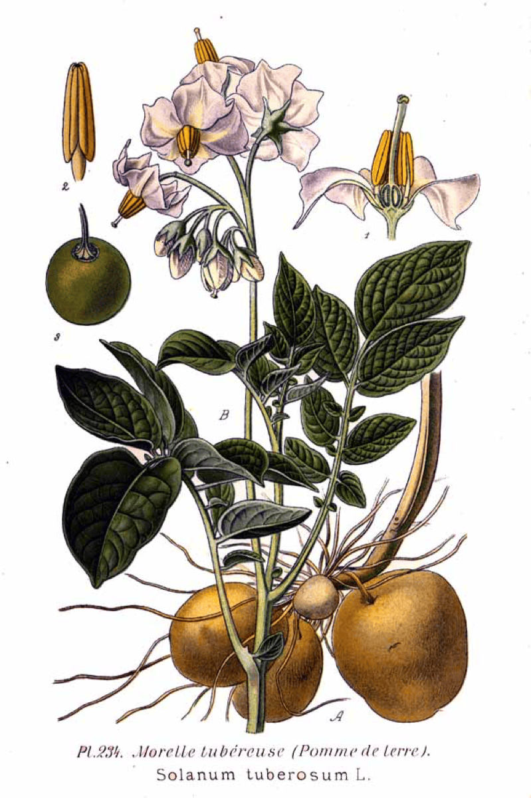
Solanum tuberosum
Potato · Major Kodaikanal crop (Poombarai/Vilpatti)
CalorieStorage
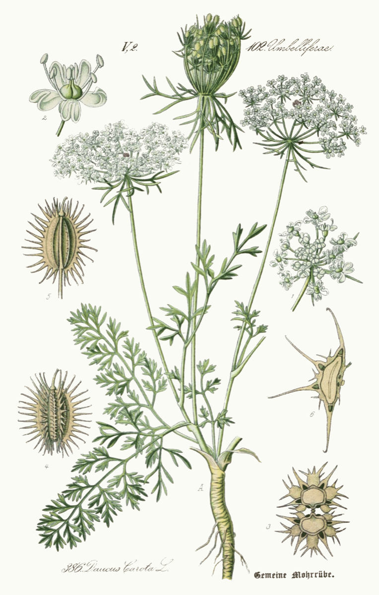
Daucus carota
Carrot · Gajjar · Two-season root for hills & plains
CalorieStorage
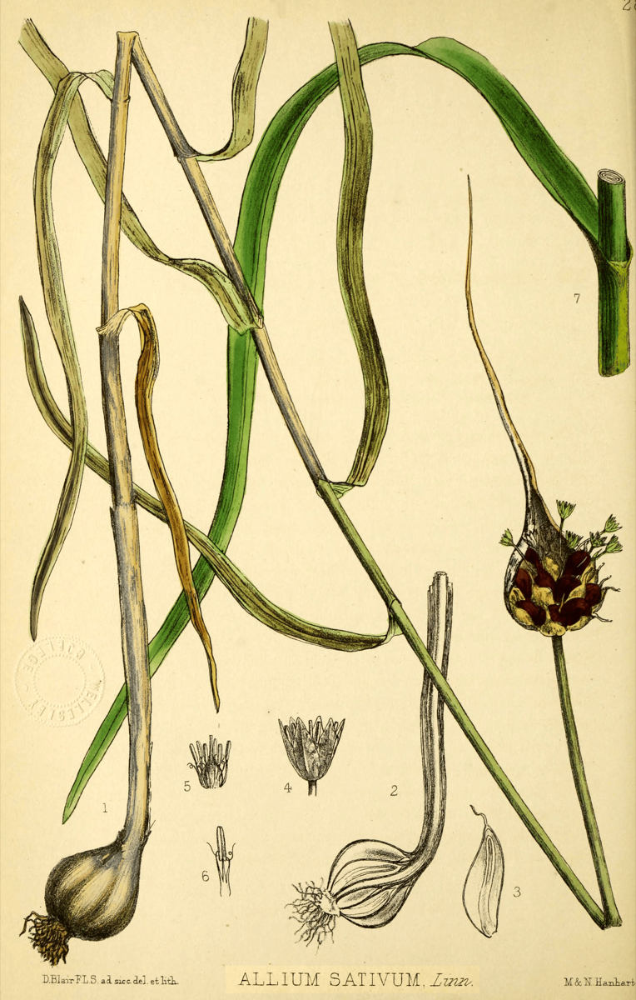
Allium sativum
Garlic · Vellai Poondu · GI-tagged Kodaikanal hill garlic
CalorieStorage
2. Protein & Soil Enrichers
Nitrogen-fixing legumes are the backbone of highland soil fertility. Intercropped with
main staples — beans climbing corn stalks in the Three Sisters tradition — they deliver
protein and soil enrichment simultaneously, crucial for sustaining high-altitude plots
without external fertilisers. French beans and broad/faba beans are the primary highland
protein — both proven in Kodaikanal conditions.
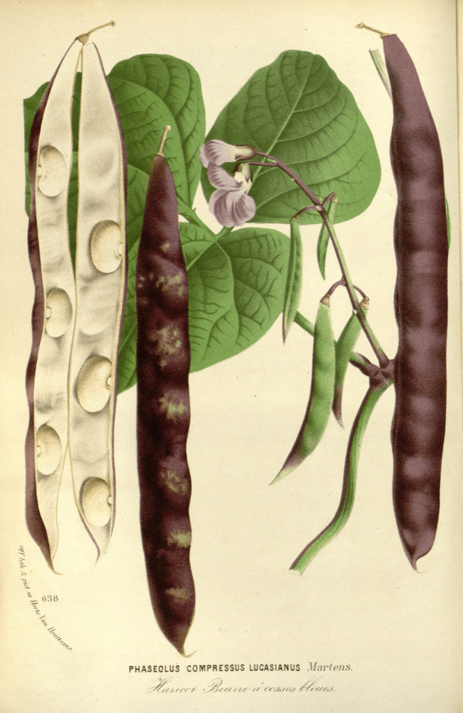
Phaseolus vulgaris
French Bean · Bush/Climbing · Primary highland pulse
ProteinAnnual
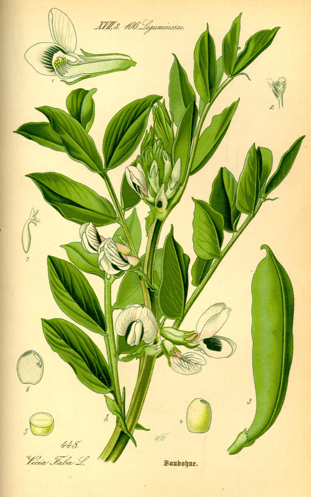
Vicia faba
Faba Bean · Broad Bean · Mochaikkai
Protein
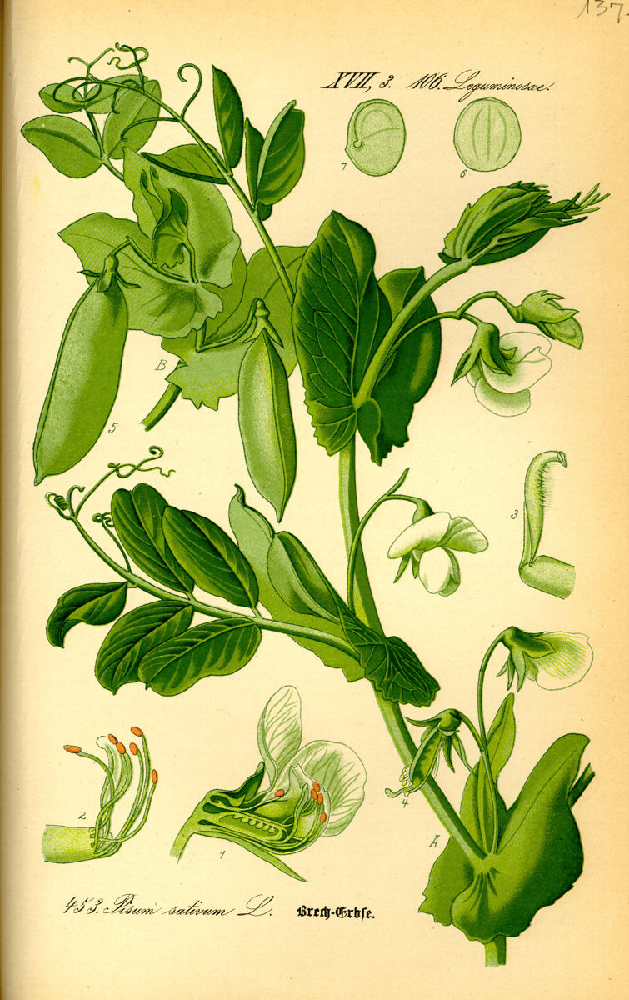
Pisum sativum
Garden Pea · Pattani · Quick cool-season legume
Protein
Highland Protein Guild
Primary: French beans (bush/climbing) and broad/faba beans — both thrive in Kodaikanal's cool climate.
Additions: Rice Bean (Vigna umbellata — hardy to 2000m), Cowpea (cooler seasons), Chickpeas, Garden Peas,
and Scarlet Runner Bean (perennial potential). Intercrop heavily with staples; they fix nitrogen
in lateritic soils and support the entire system's fertility baseline.
3. Bulk Food & Long Storage
Chow-Chow (Chayote squash) is the star of highland storage — a prolific perennial vine
that thrives in Kodaikanal conditions, produces fruit that stores for months, and integrates
seamlessly into South Indian cooking as kootu, sambar, and poriyal. Avocado adds tree-level
calorie-dense fruit with healthy fats, extending the storage layer into the canopy.
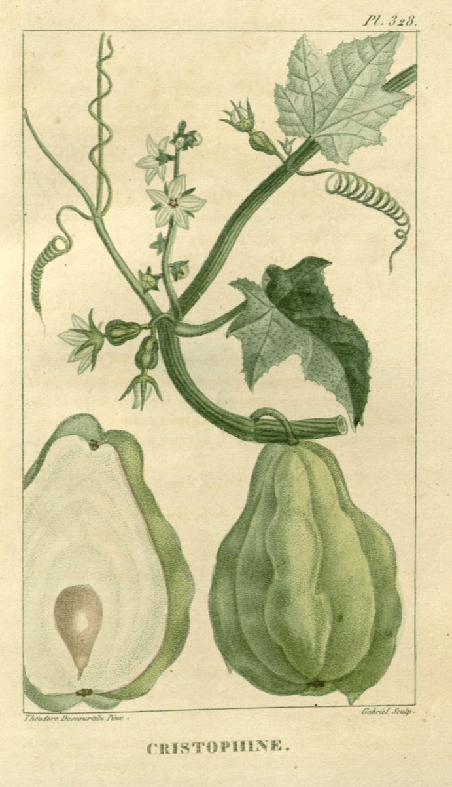
Sechium edule
Chow-Chow · Bangalore Brinjal · Chayote
StoragePerennial
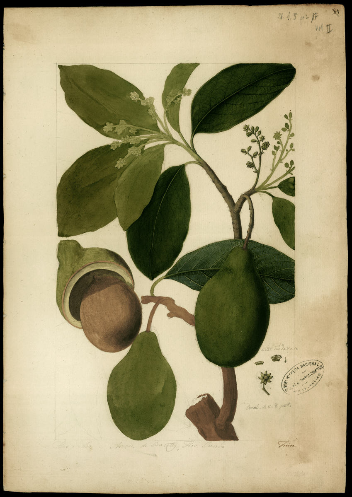
Persea americana
Avocado · Vennai Pazham · Tree-borne healthy fats
StoragePerennial
Traditional Storage Method
Cure tubers and roots in shade; store in cool, dark, ventilated sand or ash pits or baskets.
This traditional low-tech method works excellently in the misty highland climate, preserving
produce for months without refrigeration.
4. Hardy Greens & Vitamins
Focus on perennial or cut-and-come-again greens suited to cool, misty conditions. Mist and
rain help keep them lush; shade nets may be needed in periods of intense sun. The highland
toolkit is rich: kale, Swiss chard, spinach, cabbage, mustard
greens, local chenopodiums, and wild mustards. Fiddlehead ferns add foraged phytonutrient
diversity. Sorrel provides a tangy, perennial green. Herbs — coriander, mint, holy basil
(in protected spots), thyme, and oregano — complete the daily harvest layer.
Cabbage · Muttaikose · Long-storing cool-season head
VitaminStorage
5. Backup & Failsafe
"Set and forget" — harvest as needed, they regrow from tubers and roots even if
above-ground parts die back. Dioscorea yams (wild relatives
abundant in the Western Ghats) are perennial, invasive-growth-habit plants that
represent the nutritional floor below which the system cannot fall. Jerusalem Artichoke
(Helianthus tuberosus) is a promising trial crop for cool highlands — extremely hardy,
perennial, and stores in ground. Scarlet Runner Bean (Phaseolus coccineus) adds a
perennial climbing legume layer with edible pods, seeds, and tubers.
In the cool Kodaikanal hills, potatoes are your best friend! But yams are like secret buried treasure — plant them once, and they come back every year even if you forget about them. Chow-chow grows on a big vine and can hang in the kitchen for months without going bad. Jerusalem artichoke is like a vegetable that never gives up — it grows in the worst soil and still feeds you!
Part III
Low Altitude Strategy
Tamil Nadu Plains · Kerala Lowlands · Foothills
For hotter, humid tropical lowlands — Chennai, Coimbatore, Madurai, Trichy, coastal and
plain areas — the strategy emphasises heat-tolerant, humidity-loving, traditional South Indian
crops with strong perennial tendencies, drought and flood resilience, and deep integration
into everyday Tamil and Kerala cuisine: sambar, rasam, poriyal, aviyal. Minor millets
(ragi, varagu, samai) add traditional grain diversity. Jackfruit provides tree-level bulk
storage.
Lowland Context
Traditional kaadu or homestead systems — mix trees (coconut, mango, jackfruit) with
understory tubers, climbers (beans/gourds), and greens. This is very common in Kerala and
rural Tamil Nadu for food security and represents centuries of optimisation. Expanded with
traditional resilient perennials and minor millets for greater diversity.
1. Calorie-Rich Fuel Staples
Tapioca (cassava) and the vast yam family outperform potatoes in lowland heat and humidity
while storing well after harvest. Plantain/banana provides calorie-dense fruit, stem,
and flower — an entire food system in a single plant. Sweet potato (sakkaravalli kizhangu)
and elephant foot yam (senai) provide additional layers. Minor millets — ragi (finger millet),
varagu (kodo millet), samai (little millet) — add traditional grain diversity and
extraordinary storage life.
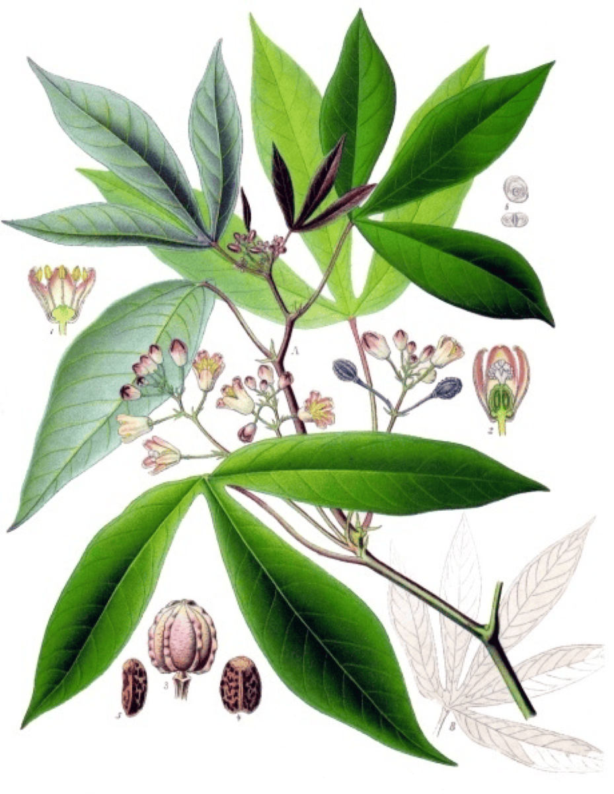
Manihot esculenta
Tapioca · Cassava · Maravalli Kizhangu
CalorieStorageBackup
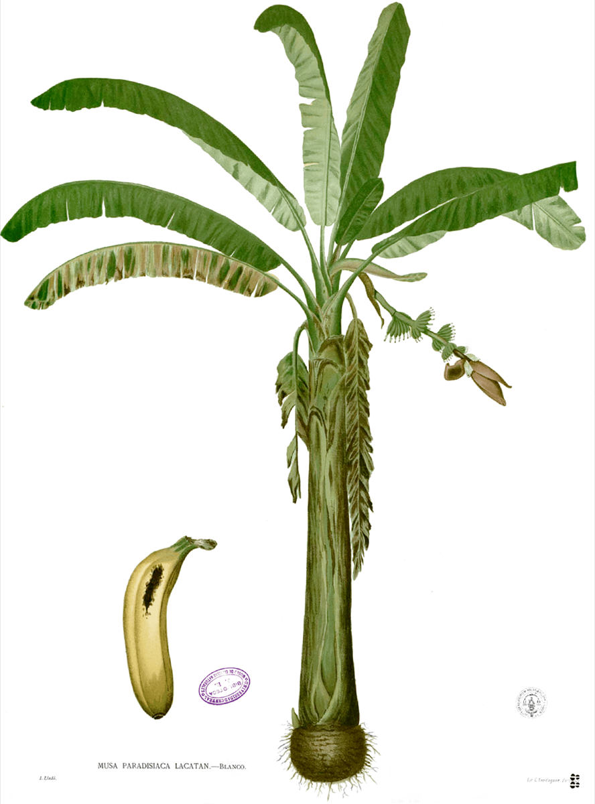
Musa × paradisiaca
Plantain · Banana · Vaazhai
CaloriePerennial
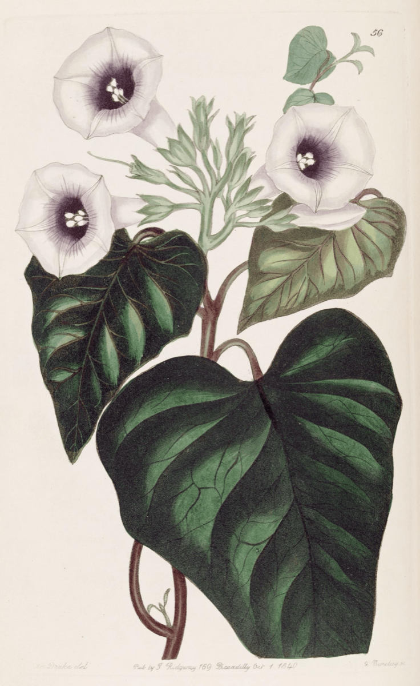
Ipomoea batatas
Sweet Potato · Sakkaravalli
Calorie
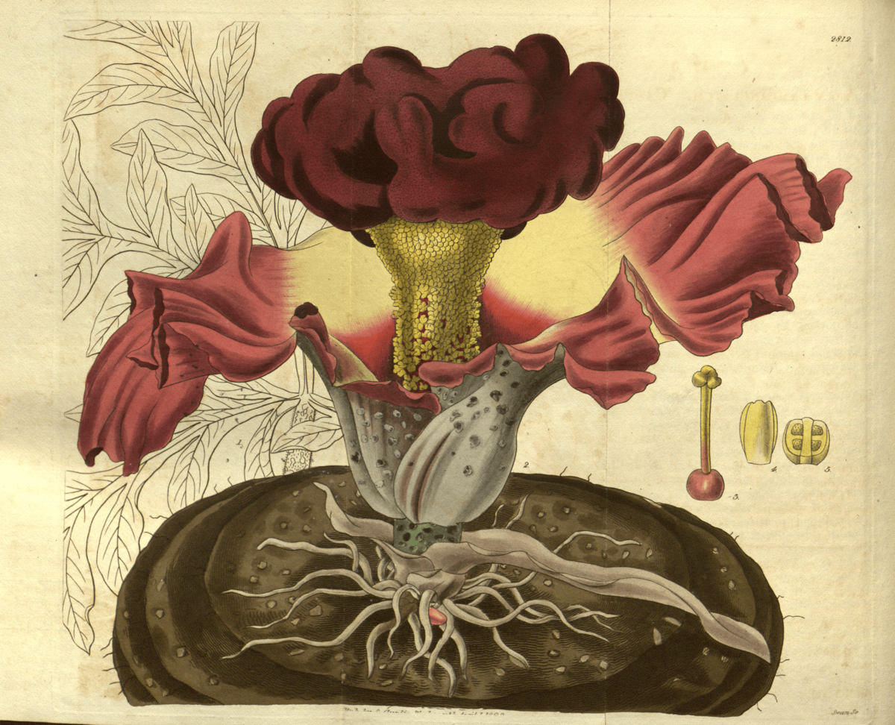
Amorphophallus paeoniifolius
Elephant Foot Yam · Senai
CalorieBackupPerennial
2. Protein & Soil Enrichers
Pigeon Pea (Toor Dal) is the cornerstone of South Indian protein and a perennial shrub —
plant once, harvest for years. Intercrop heavily with other species to fix nitrogen in
the poor lateritic or red soils common across Tamil Nadu. Lablab (avarai), cluster beans
(kothavarai), cowpea (karamani), rice bean, winged bean, and sword bean expand the protein
guild. Green gram and black gram provide quick-cycle options between main seasons.
Winged Bean (Psophocarpus tetragonolobus) is a tropical legume powerhouse — all parts
edible (pods, seeds, leaves, tubers). Sword Bean (Canavalia gladiata) is extremely hardy.
Green Gram (Mung bean, paasi payaru) and Black Gram (Ulunthu) provide quick-cycle protein
between main seasons. These collectively form a robust protein and nitrogen guild across
all seasons.
3. Bulk Food & Long Storage
Ash Gourd (Pooshanikai) is the lowland equivalent of highland Chow-Chow: prolific, versatile,
and stores for months hanging in the kitchen. Bottle gourd, pumpkin, snake gourd, and ridge
gourd round out the gourd family. Jackfruit (palappazham) provides tree-level bulk — the
largest tree-borne fruit in the world, with ripe bulbs eaten fresh and raw young fruit
cooked as curry. Elephant foot yam and cassava tubers add underground storage.
Traditional sand and ash storage methods and hanging gourds eliminate the need for refrigeration.
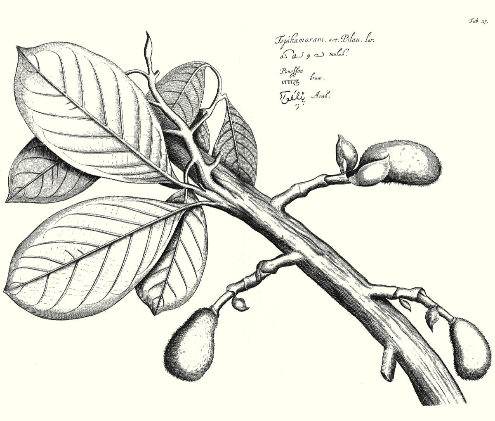
Artocarpus heterophyllus
Jackfruit · Palappazham · World's largest tree fruit
Moringa is the supreme "drumstick tree" for South India — leaves, flowers, and pods are all
edible, extraordinarily nutritious, and the tree regrows vigorously after cutting. It is the
keystone of the vitamin layer in any Tamil or Kerala homestead. Chekurmanis (Sauropus
androgynus), curry leaves (kadi patta / kariveppilai), holy basil (thulasi), Ceylon spinach,
katuk, and Brazilian spinach (perennial) expand the green toolkit far beyond what any single
species can provide.
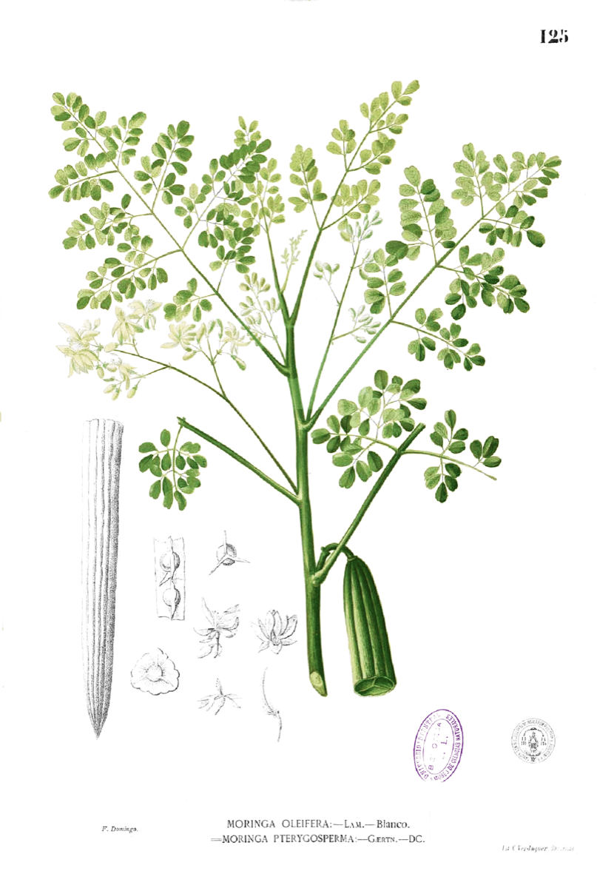
Moringa oleifera
Drumstick · Murungai · The Miracle Tree
VitaminPerennialBackup
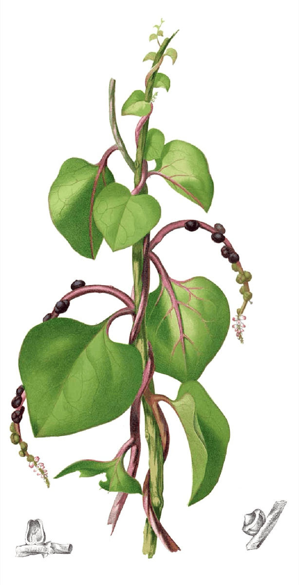
Basella alba
Malabar Spinach · Pasalai Keerai
VitaminPerennial
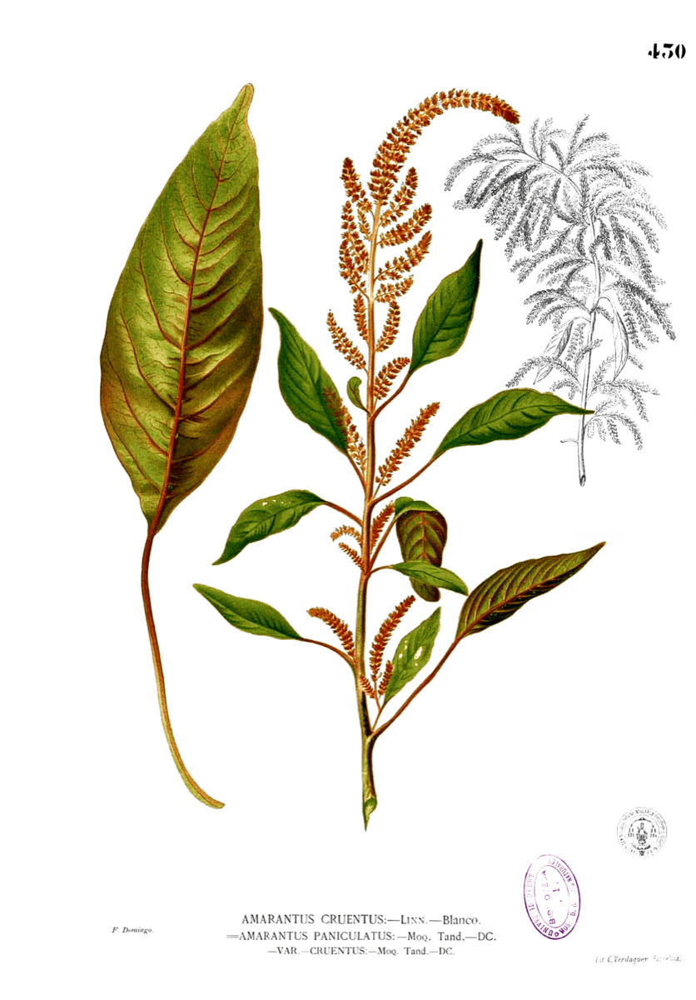
Amaranthus spp.
Amaranth · Thandu Keerai
Vitamin
5. Backup & Failsafe
Breadfruit and Greater Yam (Dioscorea alata) are tree-level and vine-level backup
staples for lowlands — both extremely hardy perennials that produce reliably even when
neglected. Taro fills the wet-margin niche where other staples fail. Elephant Foot Yam
and other Dioscorea yams spread vigorously if unmanaged, survive neglect, and persist
through poor conditions. Cassava and Moringa complete the failsafe layer — drought-tolerant,
deep-rooted, and capable of producing food even in degraded soils. Jackfruit is the
ultimate tree-level backup — ultra-reliable, massive yields, and every part usable.
Pigeon Pea (perennial) and Lablab (persistent climber) fill in as living protein stores
that reseed themselves.
The moringa tree is like a supermarket in one plant — the leaves go in your sambar, the long pods become drumstick curry, and even the flowers are edible! Jackfruit is the biggest fruit in the world that grows on a tree — one jackfruit can feed a whole family for days. Cassava is your underground safe: if everything else fails, dig it up and you have food. Plant a banana and it will look after you for years!
Part IV
Culture & Practices
Traditional South Indian Knowledge · Living Wisdom from Tamil Nadu, Kerala & the Western Ghats
Traditional knowledge from Tamil Nadu, Kerala, and Western Ghats indigenous communities —
including tribal practices in Palani Hills, Wayanad, and Attappady — aligns exceptionally
well with the first-principles framework. These practices have been field-tested over
centuries in exactly these South Indian contexts, often outperforming modern monocultures
in long-term nutritional density, soil health, and disturbance buffering.
Integration Thesis
First-principles science + refined traditional knowledge creates a hyper-resilient,
culturally grounded system that maximises nutritional density, soil regeneration,
climate adaptation, and survival redundancy while minimising external dependencies.
1. Traditional Nutrition Practices
Homegardens and polycultures — Kerala kaadu systems or Tamil homestead gardens — combine
tubers (calories), legumes (protein), greens and herbs (micronutrients), and fruits in
one plot. This creates natural complementary nutrition: greens with tubers improve iron
absorption; fermented foods enhance gut microbiome and bioavailability.
Practice
Value Addition & Preservation
Sun-drying greens and tubers, pickling with local spices, fermenting (extending idli/dosa traditions to vegetables), and roasting/parching. These methods retain higher nutritional density than refrigeration-dependent storage.
Practice
Wild & Semi-Wild Integration
Foraging wild greens, ferns, and tubers (common in the Ghats) combined with cultivating local landraces boosts phytonutrient diversity, addressing hidden hunger better than uniform commercial varieties.
2. Regenerative Soil Practices
Traditional practices are inherently regenerative and low-disturbance. Heavy mulching with
leaf litter from coconut, jackfruit, and Erythrina trees, combined with traditional
bio-formulations, feeds soil microbes, builds organic carbon, and improves structure
in acidic lateritic soils.
Traditional Bio-Formulations
Panchakavya (cow dung/urine + herbs) and Jeevamrutham-like fermented extracts
have been proven effective at feeding soil microbial life and improving plant immunity
across generations of South Indian farming. These are the original biostimulants.
Indigenous Water Management
Surangas (horizontal tunnels in Western Ghats for groundwater tapping) and tank
irrigation reduce erosion while recharging soil moisture. Farm ponds, check dams, contour
bunding, and bamboo drip systems capture monsoon abundance for dry periods.
3. Climate Adaptation Practices
Kerala and Tamil homestead models feature 4–7 vertical layers — tall trees to medium fruits
to climbers to shrubs to ground crops — mimicking forest ecology. This buffers temperature
and humidity swings (critical at 2000m+), reduces wind and frost damage, and maximises
light and water use efficiency.
Strategy
Multi-Strata Homegarden
4–7 vertical layers mimicking forest structure. 50–120+ species per garden common in traditional Kerala systems. High biodiversity spreads risk across microclimates — some crops thrive in mist, others in dry spells.
Strategy
Groves & Buffers
Cultural protection of forest patches maintains pollinators, predators, and genetic reservoirs. These buffers are not merely traditional — they are functional biodiversity infrastructure.
4. Community Security & Resilience
Traditional seed banks, exchange networks, and collective knowledge transmission ensure
genetic diversity and knowledge continuity across generations. This is the system's immune
response against cultural forgetting — perhaps the most critical and most fragile layer
of all.
Community Systems
Kudumbashree and panchakrishi models revive integrated farming systems combining
crops + livestock (goats, poultry, cattle for manure) + aquaculture (in lowlands) for
tribal resilience and community food sovereignty. These are not nostalgic — they are
sophisticated, field-validated systems.
Observational Phenology
Traditional timing based on flowering cues, bird behaviour, wind patterns, and insect
activity represents a refined monitoring system developed over generations. Use it
alongside basic scientific monitoring for a more complete picture of farm timing.
I
Adopt Kerala-style homegarden polyculture as the core spatial model
Both high-altitude and lowland versions benefit from this layered, diverse architecture.
II
Integrate bio-input traditions for soil and pest management
Panchakavya, fermented extracts, neem-based treatments — proven over centuries.
III
Layer preservation knowledge to strengthen storage categories
Sun-drying, pickling, fermenting, ash-pit storage — the original food security technology.
IV
Observe phenology alongside scientific monitoring
Traditional timing cues + basic data create a more complete and resilient management system.
🤝 For Young Learners — Why Tradition Matters
The people who lived here for hundreds of years figured out exactly which plants grow best in each spot, which ones store the longest, and which ones heal you when you're sick. When your grandparents or elders point to a plant and say something in Tamil, write it down! That name holds knowledge that no book has fully captured yet.
Reference
Full Plant Specimen Index
All species referenced in this manual, with illustration placeholders
All 31 species referenced in this manual — click any card for full specimen details,
historical illustration credits, and practical cultivation notes.
Amaranthus spp.
Amaranth / Keerai
Benincasa hispida
Ash Gourd / Pooshanikai
Persea americana
Avocado / Vennai Pazham
Musa × paradisiaca
Plantain / Banana
Artocarpus altilis
Breadfruit
Brassica oleracea
Cabbage / Muttaikose
Daucus carota
Carrot / Gajjar
Manihot esculenta
Cassava / Tapioca
Sechium edule
Chow-Chow / Chayote
Amorphophallus paeoniifolius
Elephant Foot Yam
Vicia faba
Faba Bean / Mochaikkai
Phaseolus vulgaris
French Bean
Pisum sativum
Garden Pea / Pattani
Allium sativum
Garlic / Vellai Poondu
Dioscorea alata
Greater Yam / Kava
Artocarpus heterophyllus
Jackfruit / Palappazham
Helianthus tuberosus
Jerusalem Artichoke
Brassica oleracea
Kale
Lablab purpureus
Lablab / Avarai
Basella alba
Malabar Spinach
Moringa oleifera
Drumstick / Murungai
Brassica juncea
Mustard Greens / Kadugu Keerai
Cajanus cajan
Pigeon Pea / Toor Dal
Solanum tuberosum
Potato
Cucurbita maxima
Pumpkin / Parangikkai
Phaseolus coccineus
Scarlet Runner Bean
Spinacia oleracea
Spinach / Pasalai
Canavalia gladiata
Sword Bean / Thumbai Kothavarai
Ipomoea batatas
Sweet Potato
Colocasia esculenta
Taro / Seppan Kizhangu
Dioscorea spp.
Wild Yam
Historical Illustrations
All plant illustrations in this manual are sourced from public-domain pre-1920 botanical archives: Francisco Manuel Blanco's Flora de Filipinas (1880–1883), Köhler's Medizinal-Pflanzen (1887), Curtis's Botanical Magazine (1828), Masclef's Atlas des Plantes de France (1891), and other classic works of botanical art. Each plate is credited in its caption.